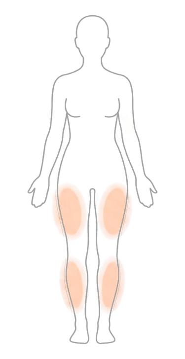

Sequência atual
0 dias Registre hoje para começar
Entenda os padrões do seu corpo e tome melhores decisões.
Olá, Ana
Entender padrões do ciclo
Score de evolução
/100
Bom
Bom progresso: continue registrando edema, medidas, hábitos e ciclo.
Resumo do ciclo
Fase atual Registre a data do seu ciclo Ajustes > Preferências do cicloSintomas de hoje
média 5.5/10
Dor6/10
Edema5/10
Sensibilidade7/10
Humor4/10
Sintoma predominante
Sensibilidade Moderado
Munich Lipedema Score
––/40 Toque para fazer sua autoavaliação
Insight rápido
Seus sintomas de sensibilidade tendem a aumentar na fase lútea.
Registrar
Fluxo menstrual
Informe a data em Ajustes > Preferências do ciclo.
Sintomas de hoje
Como você está se sentindo?Histórico
Últimos 3 ciclos
Correlação de sintomas
FolicularOvulatóriaLúteaMenstrual
Insights deste período
Linha do ciclo
Informe a data do seu último ciclo em Ajustes > Preferências do ciclo para acompanhar aqui.
Médias recentes
Dor6.0
Edema5.0
Sensibilidade7.0
Humor4.0
Insights
Padrões descobertos
Sem padrões ainda Registre seus sintomas para começar
Continue registrando seus sintomas para desbloquear insights personalizados baseados nos seus dados reais.
Plano de ação de hoje
realInforme a data do seu último ciclo em Ajustes > Preferências do ciclo para receber um plano ajustado à sua fase.
Últimos registros
realRecursos Premium
Ajustes
Nível 1
0 / 200 XP

 0
Sequência
0
Sequência
 0
Conquistas
0
Conquistas
Configurações
Conta